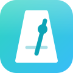

メトロノームとチューナー
← 音楽ツール120BPM
タップテンポ: 好きなリズムで、くり返しタップしてください。
—
マイクを始めてください
使い方と、できること・できないこと
メトロノーム: BPM は 30〜300。音は、先に少し先まで予約して鳴らすので、画面を触っていても、ずれにくい作りです。タップテンポは、直近の最大 8 回のタップの間隔から、平均を出します(2秒あいたら、数えなおし)。画面を閉じる・ほかのアプリに切り替えると、止まることがあります。
チューナー: マイクの音の高さを、自己相関という方法で調べて、いちばん近い音名と、ズレ(セント。100 セントで半音)を出します。単音(ギター・ベース・声・管楽器など)向けです。和音や、うるさい場所では、当たりません。基準音(A)は 400〜480Hz で変えられます。
マイクの音は、この端末の中で調べるだけで、録音も、送信もしません。初めて使うときは、マイクの許可が必要です。チューナーを開いている間だけマイクを使い、メトロノームの画面に切りかえると、マイクもメトロノームも止まります。